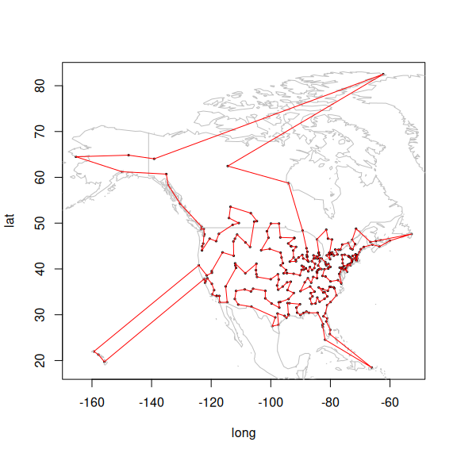

Maintainer: Michael Hahsler
Introduction
The TSP package (Hahsler and Hornik 2007) provides the basic infrastructure and some algorithms for traveling salesman problems (symmetric, asymmetric, and Euclidean TSPs). The package provides some fast implementations of simple algorithms including:
-
Tour construction heuristics
- Insertion algorithms: nearest insertion, farthest insertion, cheapest insertion, arbitrary insertion (Rosenkrantz et al. 1977)
- Nearest neighbor methods: Nearest neighbor and repetitive nearest neighbor (Rosenkrantz et al. 1977)
-
Tour improvement methods
- Two-opt heuristic (Croes 1958)
- Simulated annealing (Kirkpatrick et al. 1983)
-
State-of-the-art solver interfaces
- Concorde TSP solver interface (Applegate et al. 2000, 2006)
- Concorde Chained-Lin-Kernighan heuristic interface (Applegate et al. 2003)
The package can read and write the TSPLIB format (Reinelt 1991) and it can solve many of the problems in the TSPLIB95 problem library (local copy of the archive).
The following R packages use TSP: archetypes, cholera, condvis, CRTspat, ForagingOrg, ggEDA, isocir, MLCOPULA, nilde, nlnet, PairViz, sensitivity, seriation, sfnetworks, tspmeta, VineCopula, wompwomp
To cite package ‘TSP’ in publications use:
Hahsler M, Hornik K (2007). “TSP - Infrastructure for the traveling salesperson problem.” Journal of Statistical Software, 23(2), 1-21. ISSN 1548-7660. doi:10.18637/jss.v023.i02 https://doi.org/10.18637/jss.v023.i02.
@Article{,
title = {TSP -- {I}nfrastructure for the traveling salesperson problem},
author = {Michael Hahsler and Kurt Hornik},
year = {2007},
journal = {Journal of Statistical Software},
volume = {23},
number = {2},
pages = {1--21},
doi = {10.18637/jss.v023.i02},
month = {December},
issn = {1548-7660},
}Installation
Stable CRAN version: Install from within R with
install.packages("TSP")Current development version: Install from r-universe.
install.packages("TSP",
repos = c("https://mhahsler.r-universe.dev",
"https://cloud.r-project.org/"))Usage
Load a data set with 312 cities (USA and Canada) and create a TSP object.
Find a tour using the default heuristic.
tour <- solve_TSP(tsp)
tour## object of class 'TOUR'
## result of method 'arbitrary_insertion+two_opt' for 312 cities
## tour length: 40841Show the first few cities in the tour.
head(tour, n = 10)## Vancouver, BC Prince Rupert, BC Juneau, AK Whitehorse, YK
## 290 209 131 298
## Anchorage, AK Nome, AK Fairbanks, AK Dawson, YT
## 8 183 90 70
## Alert, NT Yellowknife, NT
## 5 309Visualize the complete tour.
library(maps)
data("USCA312_GPS")
plot((USCA312_GPS[, c("long", "lat")]), cex = .3)
map("world", col = "gray", add = TRUE)
polygon(USCA312_GPS[, c("long", "lat")][tour,], border = "red")
An online example application of TSP can be found on shinyapps.
Help and Bug Reports
You can find Q&As and ask your own questions at https://stackoverflow.com/search?q=TSP+R
Please submit bug reports to https://github.com/mhahsler/TSP/issues
References
Applegate, David, Robert E. Bixby, Vasek Chvátal, and William Cook. 2000. “TSP Cuts Which Do Not Conform to the Template Paradigm.” In Computational Combinatorial Optimization, Optimal or Provably Near-Optimal Solutions, edited by M. Junger and D. Naddef, vol. 2241. Lecture Notes in Computer Science. Springer-Verlag. https://doi.org/10.1007/3-540-45586-8_7.
Applegate, David, Robert Bixby, Vasek Chvátal, and William Cook. 2006. Concorde TSP Solver. https://www.math.uwaterloo.ca/tsp/concorde.html.
Applegate, David, William Cook, and Andre Rohe. 2003. “Chained Lin-Kernighan for Large Traveling Salesman Problems.” INFORMS Journal on Computing 15 (1): 82–92. https://doi.org/10.1287/ijoc.15.1.82.15157.
Croes, G. A. 1958. “A Method for Solving Traveling-Salesman Problems.” Operations Research 6 (6): 791–812. https://doi.org/10.1287/opre.6.6.791.
Hahsler, Michael, and Kurt Hornik. 2007. “TSP – Infrastructure for the Traveling Salesperson Problem.” Journal of Statistical Software 23 (2): 1–21. https://doi.org/10.18637/jss.v023.i02.
Kirkpatrick, S., C. D. Gelatt, and M. P. Vecchi. 1983. “Optimization by Simulated Annealing.” Science 220 (4598): 671–80. https://doi.org/10.1126/science.220.4598.671.
Reinelt, Gerhard. 1991. “TSPLIB—a Traveling Salesman Problem Library.” ORSA Journal on Computing 3 (4): 376–84. https://doi.org/10.1287/ijoc.3.4.376.
Rosenkrantz, Daniel J., Richard E. Stearns, and Philip M. Lewis II. 1977. “An Analysis of Several Heuristics for the Traveling Salesman Problem.” SIAM Journal on Computing 6 (3): 563–81. https://doi.org/10.1007/978-1-4020-9688-4_3.